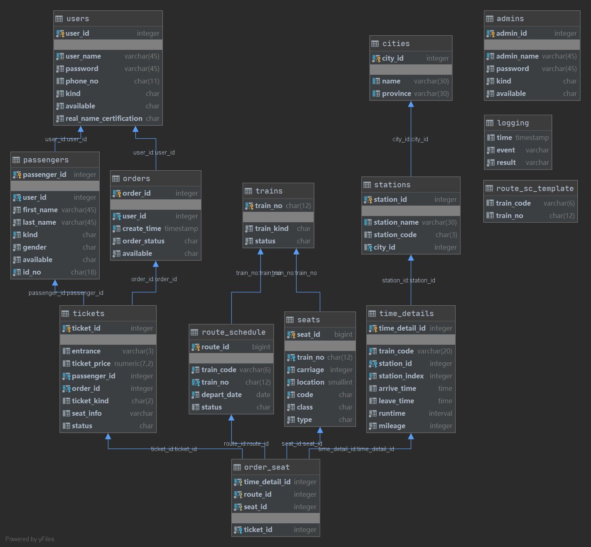
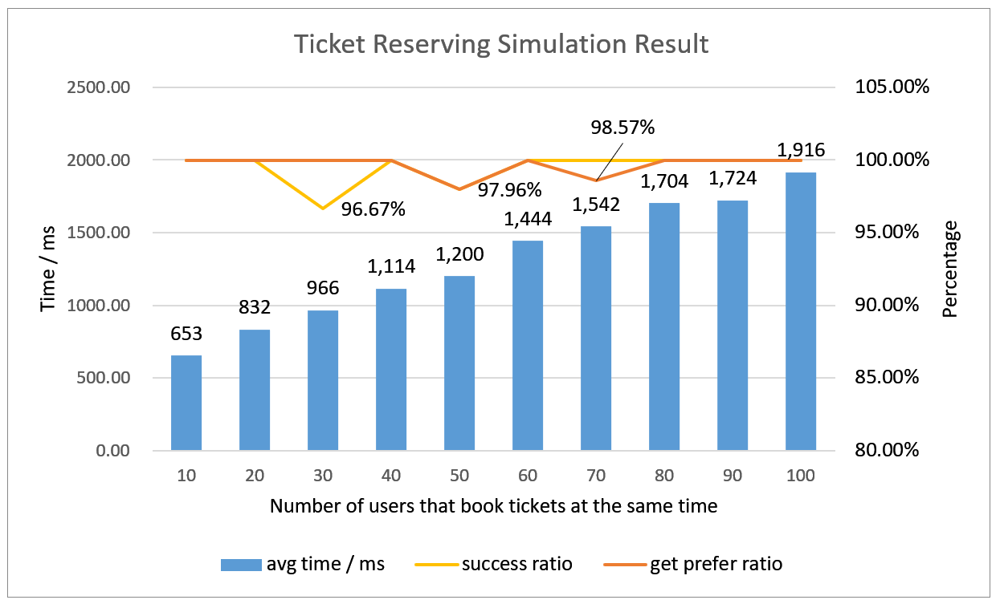
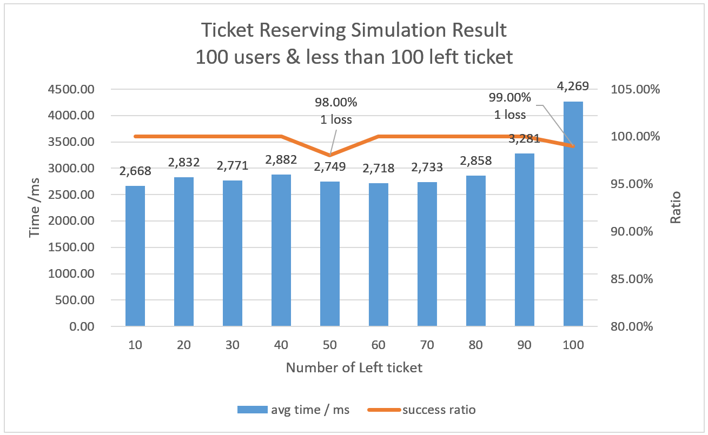

My12306
API参考表目
设计及测试结果
Druid连接池监控
这是该项目的数据库设计与并发访问测试
因为这是数据库的期末Proj，为了充分利用关系型数据库
(掩盖菜的事实)
，在性能和实用上有些妥协。 不过也算是能在接受范围内。
另外，也牺牲了一定的性能，优先解决余票少于购票人的高并发情形下，购票成功率极低的情况(20~30%修复至近100%)

图1 库表设计

图2 充足余票时并发模拟结果

图3 余票少于购票者时并发模拟结果